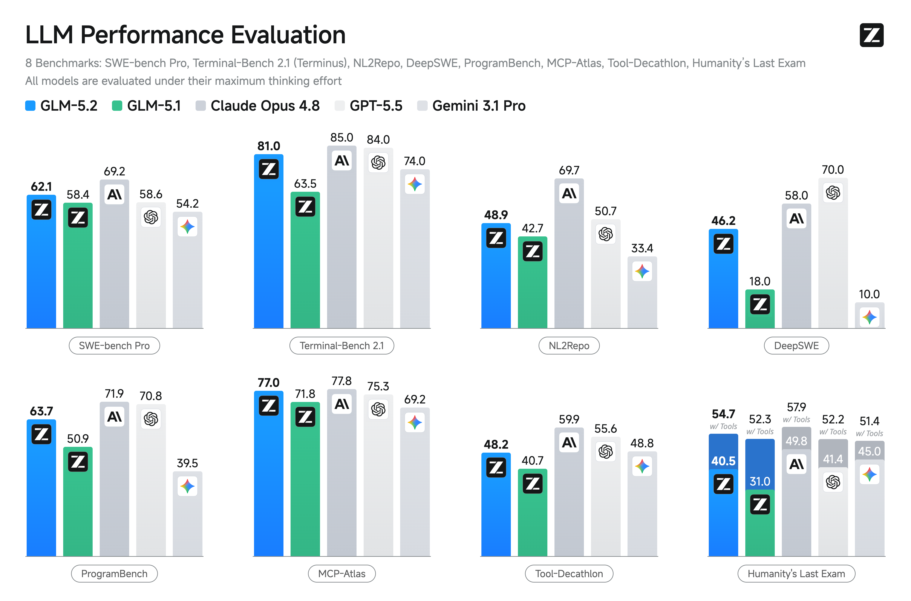

00全景与读法
GLM-5.2 有三个数字决定了它在本看板的位置：MIT（可商用、可改、可自托管——载荷资格），SWE-bench Pro 62.1（开源编程第一梯队——标杆价值），753B / 40B（算力按 40B 计、显存按 753B 计——自托管与 RL 训练的门槛）。它的关键工程是 IndexShare：在 DSA 式块稀疏注意力之上，把选块索引器每 4 层一组复用，省的不是注意力本体而是"决定读取哪些块"的元开销，由此把 200K → 1M 的成本控制住。读它的评测表要同时看公布了什么与未公布什么：SWE-bench Verified / LiveCodeBench / Aider polyglot 三项最易被外部复现的基准集体缺席，Tool-Decathlon 明显落后——单步工具已达第一梯队，多步编排是短板。所有数字均为厂商 / 媒体口径，provisional。
每一节固定三段：朴素基线（左栏，灰，不看这期分析时的直觉判断或实现）/ 它的做法（右栏，橙，GLM-5.2 的实际设计或本期给出的判断）/ 差在哪（下方色块）。数字按来源分三类：自报 厂商或媒体口径、第三方 独立来源（Artificial Analysis 定位、vLLM-Ascend 支持矩阵）、推断 本站分析。原文全部评测数字为 provisional，以官方报告与第三方复现为准；本文保留该限定。
本篇有一个 2026-08-31 的跟进（第 12 节）：GLM-5.3 与 5.2 基座完全相同，vLLM-Ascend 适配已落地——本篇作为 5.2 架构详解仍然有效，后训练演进以 D34 为准。
01身份与定位
厂商：智谱 AI（国际品牌 Z.ai）。发布：2026-06-13，MIT 开源权重（HuggingFace zai-org/GLM-5.2）。定位：coding-first 的旗舰 MoE，主打智能体工程（agentic engineering）与长上下文编码；延续 GLM-5《from Vibe Coding to Agentic Engineering》（arXiv 2602.15763）与 GLM-4.5 ARC（Agentic / Reasoning / Coding，arXiv 2508.06471）的路线。快速迭代：GLM-5 → 5.1 → 5.2，几个月一代，是对出口管制的"开源回应"。
朴素基线
一个新版本号即一个新模型；版本间的差别看分数增量即可。
它的做法
自报 5.2 定位为 coding-first + agentic engineering，是 GLM-5 与 GLM-4.5 ARC 两篇技术报告所定路线的延续；几个月一代的节奏本身是定位的一部分。推断 第 12 节的跟进显示 5.3 与 5.2 基座相同——版本号增量不等于架构增量。
差在哪对本看板而言，定位里最重要的词是 MIT 与 agentic engineering：前者给出载荷资格，后者说明它的强项方向恰是 agentic RL 的训练场。"对出口管制的开源回应"为原文的定性描述，无进一步来源。
02架构详解
| 维度 | GLM-5.2 | 备注 |
|---|---|---|
| 结构 | 稀疏 MoE | 承袭 GLM-5 的 744B 级 MoE |
| 总参数 / 激活 | 约 753B / 约 40B | 每 token 仅激活约 40B |
| 注意力 | DSA 式稀疏 + IndexShare | 索引器每 4 层一组复用，控 1M 推理成本 |
| 上下文 | 1M（可用） | 较 GLM-5.1 的约 200K 扩展 5× |
| 最大输出 | 131,072 token | 长代码 / 长报告 |
| 推理模式 | High / Max 双档 | 按难度切换深度推理 |
| 预训练 | 28.5T token | |
| 许可 | MIT | 可商用、可改、可自托管 |

这张图怎么读
四段中与本看板最相关的是前两段。注意力段内 DSA → IndexShare 的箭头表示 IndexShare 是叠加在 DSA 之上的一层，而非替代——它不改变稀疏注意力的形态（第 03 节）。MoE 段内"总参数 753B"与"激活 40B"两个节点用箭头相连，但它们描述的是两个脱钩的量：前者决定显存，后者决定算力（第 05 节）。
虚线注释是这张图的结论：推理算力约等于 40B 稠密，但须装下 753B 权重。图中没有 IndexShare 的分组细节、MoE 的专家数与路由方式、High / Max 两档的具体差异——原文均未给出。
几个要点：IndexShare 稀疏注意力是 5.2 的关键工程——为控制 200K → 1M 的上下文成本，GLM 在 DSA（DeepSeek Sparse Attention）式的稀疏注意力之上加入 IndexShare，将稀疏注意力的"选块索引器"在每 4 层一组内复用，而非每层重算一遍索引，节省索引开销；与 DeepSeek 的 CSA / HCA、MiniMax 的 MSA 同属 2026 的"稀疏注意力潮"（见 D04 / D05）。"可用的 1M"是核心亮点：厂商称在数十万 token 后性能不衰减，而非仅为纸面长度。40B 激活 / 753B 总：典型的"大稀疏、小激活"——推理算力约等于 40B 稠密，但要装下 753B 权重，自托管门槛高（多卡 / 多 NPU）。双推理档（High / Max）：将快速应答与深度推理分离，适配编码 vs 智能体长任务两类场景。
朴素基线
1M 上下文是一个配置项，把位置编码与 KV cache 上限调到 1M 即可宣称支持；成本随长度线性增长可以接受。
它的做法
自报 上下文由 5.1 的约 200K 扩展 5× 到 1M，靠 DSA 式稀疏 + IndexShare 把成本控制住；厂商称数十万 token 后性能不衰减（"可用的 1M"）。无衰减曲线数字。
差在哪"可用"与"纸面"的差别在成本与质量两个维度都要在 1M 处成立：成本靠 IndexShare 控，质量靠"不衰减"声明。前者原文给了机制（第 03 节），后者只有厂商口径、无曲线。对 NPU 的含义：又一条 DSA 式稀疏注意力路径要移植并对齐（第 09 节）。
03IndexShare 的节省来源
要理解 IndexShare 节省的是什么，需先说明 DSA 这类"块稀疏注意力"的工作方式。标准全注意力里每个 query 都要和序列里所有 KV 做点积，代价随上下文长度平方增长——这正是 200K → 1M 成本最高的环节。块稀疏的思路是把 KV 序列切成若干"块"，每个 query 只读取被选出的少数几块；负责选块的部件就是索引器（indexer）/ 选块器：它为每个 query 计算一个轻量打分，选出 top-k 块，后续精确注意力只在这 top-k 块上进行，注意力本体从 O(N²) 降为 O(N · k)。可用 1M "不衰减"依赖的正是这种"只精算少数相关块"在长序列上仍能锁定关键信息。
索引器每层重算构成开销的原因。索引器本身并非零成本——它要为每层、每个 query 执行一遍打分和 top-k 选择；当上下文扩展到数十万、上百万 token、块数量膨胀时，"为每一层重新计算应读取哪些块"的累积成本变得可观。这部分开销和注意力本体是两类独立开销：稀疏化已节省主体 FLOPs，但索引器的"选块"开销会在层数 × 块数上累加，成为新瓶颈。

这张图怎么读
左右两侧的差别在索引器节点的数量：左侧 4 层有 4 个索引器（串行连接，各自重算），右侧 4 层只有 1 个索引器（一对多分发）。被复用的仅是"读取哪些块"这个索引；每层的注意力本体（V 聚合、输出投影）仍逐层独立计算——图中右侧 4 个层节点仍然各自存在，正是表示这一点。
两侧各有一个虚线开销节点：左"每层一次"、右"每组一次"，这是"粗略估算索引器选块开销降到约 1/4"的图形来源。图未表达的是代价：组内后 3 层沿用组首层的选块，若某层本应关注的块与组首层不同，会有错配——这是第 03 节末"取舍"段的内容，图中没有对应节点。
IndexShare 的节省机制。关键观察是：相邻层的选块模式高度相似——第 L 层判定相关的那些 KV 块，第 L+1、L+2 层大概率同样判定相关。因此无需每层重算索引。IndexShare 把索引器每 4 层编为一组：组内第一层算出选块结果（块索引），后续 3 层直接复用、跳过重算；注意力本体仍逐层独立计算（每层 V 聚合、输出投影不变），被复用的只是"读取哪些块"这个索引。粗略估算，索引器选块开销降到约 1/4，这正是它控制 200K → 1M 成本、使长上下文从"可启用"变为"成本可承受"的来源。取舍：复用层数越多，选块越"僵化"——索引每 4 层才更新一次，组内后几层被迫沿用组首层的相关性判断，若某层本应关注的块和组首层不同（不同层负责不同粒度依赖），错配会导致精度下降；4 是工程折中，分组更大节省更多但选块更迟钝，更小则节省有限。（以上机制为厂商口径 provisional，分组大小、索引器结构待复现。）
朴素基线
稀疏注意力的成本就是注意力本体的成本；选块器是轻量部件，忽略其开销；每层独立选块以保证每层看到最相关的块。
它的做法
自报 索引器开销在层数 × 块数上累加，1M 下成为新瓶颈；基于"相邻层选块模式高度相似"的观察，每 4 层共享一次选块，索引开销约降至 1/4；接受组内后 3 层选块可能错配的精度代价。分组大小 4 为工程折中。
差在哪差别在识别出了一个被朴素基线忽略的第二类开销，并用跨层相似性把它摊薄。原文给出了理由（相邻层选块相似）与取舍（僵化风险、分组大小的两难），但"约 1/4"是粗略估算，"相邻层选块高度相似"这一前提没有测量数据。对 RL-on-NPU 的含义：IndexShare 在 decode 阶段省下的索引开销与 KV 读取直接缓解 rollout 显存压力，但移植时需额外对齐"组内复用的索引"这一层——若 NPU 侧索引器数值漂移，错配会被放大到 4 层。
042026 稀疏注意力潮横向：各自省哪一块
原文的横向对比：GLM-5.2 IndexShare 不改稀疏注意力形态，省的是索引器（选块）的重复计算；DeepSeek CSA / HCA 省的是注意力本体计算量（分层粗细结合，减少需精算的 query-KV 对）；MiniMax MSA 省的是全注意力层占比（多数层用低成本的稀疏 / 线性形态，只在关键层保留全注意力）；MiMo SWA 省的是注意力感受野（每个 query 只读取局部窗口，远距离依赖靠多层堆叠间接传递）。概括：IndexShare 节省"决定读取哪些块"的元开销，CSA / HCA 节省"精算多少对"的本体开销，MSA 节省"多少层使用高成本注意力"，SWA 节省"每个 query 的读取范围"。GLM-5.2 的选择对注意力形态改动最小、最偏工程性削减——这也解释了它能在已有 DSA 方案上叠加一层开销极低的成本优化的原因。
| 方案 | 机制 | 省的方式 |
|---|---|---|
| GLM-5.2 IndexShare | DSA 式块稀疏 + 索引器每 4 层一组复用 | 省索引器（选块）的重复计算——跨层复用块索引，控制 200K → 1M 索引开销 |
| DeepSeek CSA / HCA | 块稀疏选择（CSA）+ 分层注意力（HCA） | 省注意力本体计算量——分层粗细结合，减少需精算的 query-KV 对 |
| MiniMax MSA | 全注意力层与稀疏 / 线性层交错 | 省全注意力层占比——多数层用低成本形态，仅关键层保留全注意力 |
| MiMo SWA | 滑动窗口 + 少量全局 token | 省注意力感受野——仅读取邻近范围，远距离依赖靠多层堆叠间接传递 |
朴素基线
四家稀疏注意力都在"省注意力算力"，是同一件事的不同实现。
它的做法
推断 四家省的是四个不同的量：元开销（索引）、本体开销（精算对数）、层占比、感受野。IndexShare 是其中对注意力形态改动最小的一种，可以叠加在已有 DSA 之上。
差在哪这张表的价值在把"省"拆成四个可分别度量的量。需要保留一个本站提示：表中对 MSA 的描述（"全注意力层与稀疏 / 线性层交错"）与 D04 精读中 MSA 的机制（GQA 主干上 Index 分支选块 + Main 分支在真实 KV 上精确注意力）不一致；原文本处为厂商 / 媒体口径的横向概括，机制以 D04 为准。类似地，"MiMo SWA"的机制见 D07。四家均无同一基准上的成本对照数字。
05大稀疏小激活：成本低但自托管困难的原因
GLM-5.2 是 753B 总参数 / 40B 激活的 MoE，这两个数字决定了两件几乎相反的事。算力只按 40B 激活计算——因此成本低：MoE 每个 token 前向只激活一小部分专家，虽然总权重 753B 但单 token 实际参与计算的只有约 40B（注意力 + 被路由到的少数专家 FFN，其余 700 多 B 在该步完全不参与乘加），所以推理 FLOPs / token ≈ 一个 40B 稠密模型而非 753B；训练同理，算力按激活规模计。算力节省 → 单位 token 成本低 → API 价格低（$1.40 / $4.40 约 GPT-5.5 的 1/6，是结构性来源）。显存须容纳全部 753B——因此自托管困难：算力可只计激活部分，显存则不然，MoE 所有专家都须常驻（无法预知下一个 token 路由到哪些专家，全部权重必须随时可取）；753B 即便 8-bit 也要约 750GB 量级、FP16 翻倍，远超任何单卡，自托管推理必须多卡 / 多 NPU 把专家切分部署（专家并行 / 张量并行），门槛提升至集群级——算力需求和显存需求完全脱钩。RL 训练要求更高：推理只需权重 + KV，RL 后训练还要叠加优化器状态、梯度、激活值外加 rollout 推理副本（优化器状态通常是参数量的数倍显存），对 753B 体量仅容纳"权重 + 梯度 + 优化器"即需可观卡数，门槛比推理高一个层级——这也是这类模型 RL 训练基本绑定多卡 / 384-NPU 超节点（MindSpeed-RL / Atlas 950）的原因，而 IndexShare 在 decode 阶段省下的 KV，恰好缓解"无 sleep-mode rollout"时的显存压力，是它在训练侧的隐性价值。
朴素基线
"40B 激活"的模型部署成本接近一个 40B 稠密模型；能推理就能训练，卡数按比例增加即可。
它的做法
推断 算力按 40B 计（成本低、价格约 1/6 的结构性来源），显存按 753B 计（8-bit 约 750GB 量级，FP16 翻倍，须多卡专家并行 / 张量并行）；RL 再叠加优化器状态（通常为参数量数倍）、梯度、激活值与 rollout 副本，门槛比推理高一个层级，绑定 384-NPU 级超节点。
差在哪差别在算力与显存两个需求完全脱钩：朴素基线用一个数字（激活量）估两件事，实际上要用两个数字分别估。原文的"约 750GB 量级"为按 753B × 1 byte 的量级估算，"优化器状态数倍"为通行经验、无具体倍数。对 RL-on-NPU 的含义有正反两面：反面是 753B 的 RL 训练基本只能在超节点上做；正面是 IndexShare 省下的 decode 期 KV 在无 sleep-mode 的 rollout 中直接换成显存余量。
06评测全表（provisional）

这张图怎么读
先读蓝柱与绿柱的差（5.2 对 5.1）：Terminal-Bench 2.1 81.0 对 63.5、DeepSWE 46.2 对 18.0、ProgramBench 63.7 对 50.9——同代内的增量在长程终端任务与仓库级任务上最大，与 SWE-bench Pro 62.1 对 58.4 的小幅增量形成对比。这与第 12 节跟进（5.3 基座不变、能力全部来自后训练）合看，说明 GLM 系的增量主要落在 agentic 任务上。
再读蓝柱与两根深灰柱的差（对 Opus 4.8 / GPT-5.5）：SWE-bench Pro 62.1 对 69.2 / 58.6，Terminal-Bench 81.0 对 85.0 / 84.0，MCP-Atlas 77.0 对 77.8 / 75.3——这是原文"对 Opus 差距收到 1–4 分、对 GPT-5.5 在 SWE-bench Pro 领先"的图形来源。图中 Tool-Decathlon 面板把原文的"明显落后"量化了：48.2 对 Opus 59.9、GPT-5.5 55.6，落后约 7–12 分，是八个面板里差距最大的一个；NL2Repo（48.9 对 69.7）与 DeepSWE（46.2 对 58.0 / 70.0）两个面板原文未提及，同样显示两位数差距——三者共同指向"多步、仓库级、长链路"任务。
两个口径提示：图中 MCP-Atlas 为 77.0，原文写 76.8，两者来源可能不同版本，引用时注明；HLE 面板每根柱分两段（w/ Tools 与不带工具），GLM-5.2 带工具 54.7、不带 40.5，原文只引带工具值。图中没有 FrontierSWE、AIME、GPQA 三项，原文的这三个数字来自其他来源。全部为厂商自跑，图注"maximum thinking effort"意味着对照模型的数字也是 Z.ai 复跑口径。
① 编程 / 软件工程
| 基准 | GLM-5.2 | 对照 |
|---|---|---|
| SWE-bench Pro | 62.1 | GLM-5.1 58.4 · GPT-5.5 约 58.6 |
| FrontierSWE | 74.4 | GPT-5.5 72.6 · Opus 4.8 75.1 |
| Terminal-Bench 2.1 | 81.0（最佳 harness 82.7） | Opus 4.8 85.0 |
② 推理 / 数学 / 科学
| 基准 | GLM-5.2 |
|---|---|
| AIME 2026 | 99.2 |
| GPQA Diamond | 91.2 |
| HLE（Humanity's Last Exam，带工具） | 54.7 |
③ 智能体 / 工具使用
| 基准 | GLM-5.2 | 对照 |
|---|---|---|
| MCP-Atlas | 76.8 | Opus 4.8 77.8（几乎打平） |
| Tool-Decathlon | 明显落后 | 落后 Opus 4.8 / GPT-5.5 |
④ 横向定位：Artificial Analysis 上被列为当前领先的开源权重模型。对 Opus 4.8：编码差距收到约 1–4 分（FrontierSWE 74.4 vs 75.1、MCP-Atlas 76.8 vs 77.8、Terminal-Bench 81 vs 85），个别项在最佳 harness 下反超。对 GPT-5.5：SWE-bench Pro（62.1 vs 约 58.6）、FrontierSWE（74.4 vs 72.6）领先。
朴素基线
按厂商给出的表逐项比高低，得出"开源已超 GPT-5.5、逼近 Opus"的结论。
它的做法
第三方 Artificial Analysis 列为领先开源权重模型（独立口径）。自报 全部单项分数为厂商 / 媒体口径，对照模型的数字亦为 Z.ai 复跑（图 3 注明最大思考强度）。原文对每一项都保留 provisional，并把"公布了什么 / 未公布什么"列为读榜前提（第 08 节）。
差在哪差别在把评测表当作一个有选择的披露而非中立测量。三块表里，编程强、数学科学强、智能体不均衡，这是数字本身；三项社区基准缺席、对照数字为厂商复跑，这是数字之外的信息。两者要一起读。
07价格（API）
| 模型 | 输入 $/1M | 输出 $/1M | 相对 |
|---|---|---|---|
| GLM-5.2 | 1.40 | 4.40 | 基准 |
| GPT-5.5 | 5 | 30 | 约 6× 贵（综合） |
| Claude Opus 4.8 | 5 | 25 | 约 5–7× 贵 |
开源、低价与 1M 上下文的组合是 GLM-5.2 最突出的竞争优势：性能贴近闭源旗舰，价格约 1/6。
朴素基线
低价是市场策略，与架构无关；可随时调整。
它的做法
推断 第 05 节的分析把 1/6 的价格归为结构性来源：算力按 40B 激活计。但同一结构使自托管门槛高（753B 显存），因此低价主要体现在 API 侧，自托管者要自行承担多卡成本。
差在哪"约 1/6"是输入 / 输出综合的粗略比例（输入 1.40 对 5 约 3.6×，输出 4.40 对 30 约 6.8×），原文自己标注"综合"。对本看板，价格不是选型依据——MIT 自托管才是——但它印证了 40B 激活的算力经济性。
08强项与短板：读榜须知
强项：编程 / 软工是主战场（SWE-bench Pro、FrontierSWE、Terminal-Bench 都在第一梯队）；数学 / 科学（AIME 2026 99.2、GPQA 91.2）非常高；可用的 1M 上下文 + MIT 开源 + 极低价。短板 / 需要警惕：智能体工具不均衡——MCP-Atlas 接近 Opus，但 Tool-Decathlon 明显落后，HLE（带工具）54.7 一般，多步工具编排还不是它的强项；关键基准缺席——智谱没有公布 SWE-bench Verified、LiveCodeBench、Aider polyglot，恰恰是开源社区最常用的三项 agentic-coding 基准，厂商选择了对自身有利的榜单，对比时需补齐这一空白；API 数据风险——有报道提示通过其 API 使用存在中国数据合规顾虑，自托管（MIT 权重）可规避该风险；所有数字仍是厂商 / 媒体口径，待第三方复现。

这张图怎么读
要读的是箭头的走向：编程与数学两组指向"额外优势"，智能体一组单独指向"隐忧"。这个分流是原文读榜逻辑的图形化——强项与价格、许可叠加成采购吸引力，而短项与"未公布什么"叠加成保留判断的理由。
"隐忧"框里两个节点性质不同：R1 是披露的选择（三项最易复现的基准缺席），R2 是口径（全部厂商自报）。前者是本篇独有的观察，后者适用于本看板所有模型。末端结论把"可信度"与"智能体"并列为变量，即在独立复现之前，编程数学的强也带 provisional 前缀。
缺席的三项恰好是社区最常用、可独立复现的：厂商口径里没有 SWE-bench Verified、LiveCodeBench、Aider polyglot，这三项共同点是社区使用最广、有公开 harness、第三方可独立运行并核对结果。一个模型选择性公布对自己有利的榜单是行业常态、本身不构成"造假"，但当恰好是这三项最易被外部复现的基准集体缺席、公布的却是 SWE-bench Pro、FrontierSWE、MCP-Atlas 这类相对新或复现门槛更高的榜时，中立解读是：保留判断，等独立复现——披露的选择本身就是信息。智能体能力画像不均衡：单步达标，多步偏弱：MCP-Atlas 76.8 几乎持平 Opus 4.8 的 77.8，但 Tool-Decathlon 明显落后；MCP-Atlas 偏单次 / 浅层工具调用正确性，Tool-Decathlon 考察多步、多工具的编排与长链路状态保持——一高一低共同构成的画像是"单步工具调用已达第一梯队，但多步工具编排（规划、错误恢复、跨步状态维持）是明显短板"，这和它在 FrontierSWE / Terminal-Bench 2.1 上"逼近但未达到 Opus"方向一致：越是长链路、状态密集的智能体任务，差距越明显。结论：数学、知识、单步工具的数字确实强，SWE-bench Pro 甚至声称领先 GPT-5.5，但落地为采购 / 选型依据前必须补齐独立复现——尤其需独立运行缺席的 Verified / LiveCodeBench / Aider，并单独压测多步工具编排。在那之前所有结论都带 provisional 前缀。
| 基准 | GLM-5.2 | GPT-5.5 | Opus 4.8 | GLM 相对位置 |
|---|---|---|---|---|
| SWE-bench Pro | 62.1 | 约 58.6 | — | 领先 GPT-5.5 |
| FrontierSWE | 74.4 | — | 75.1 | 逼近 Opus，小幅落后 |
| Terminal-Bench 2.1 | 81.0 | — | 85 | 落后 Opus 约 4 分 |
| MCP-Atlas | 76.8 | — | 77.8 | 基本打平 Opus |
| Tool-Decathlon | 明显落后 | — | — | 短板，多步编排弱 |
| AIME 2026 | 99.2 | — | — | 第一梯队 |
| GPQA Diamond | 91.2 | — | — | 第一梯队 |
| 价格（入 / 出，每 1M） | $1.40 / $4.40 | 约 6× GLM | — | 约 GPT-5.5 的 1/6 |
朴素基线
智能体能力用一个基准代表即可；MCP-Atlas 接近 Opus 就说明智能体能力接近 Opus。
它的做法
推断 单步（MCP-Atlas）与多步（Tool-Decathlon）分开看，一高一低的画像是"单步达标、多步偏弱"，且与 FrontierSWE / Terminal-Bench "逼近但未达到"方向一致——越长链路、越状态密集，差距越大。图 3 把这一落差量化为 48.2 对 59.9 / 55.6。
差在哪差别在用基准的任务形态来解释分数的分布，而不是把分数平均。这个画像对本看板有直接含义：多步工具编排恰是 agentic RL 的目标能力，也是 GLM-5.2 作为 RL 基座时最有提升空间的方向——第 12 节跟进显示 5.3 的增量正落在此处。API 数据合规顾虑为"有报道提示"，无具体来源，且自托管可规避。
09对 RL-on-NPU 的意义
本看板将 GLM-5.2 视为首选开源 RL 基座的原因：MIT + 强编程 = 理想的 RL 后训练底座——可商用、可改权重，适合在昇腾上做 GRPO / RLVR 的开源实验对象；编程 / 智能体方向恰是 agentic RL 的训练场。昇腾就绪度：partial——GLM-5 已在 vLLM-Ascend（性能优化 + W8A8C8 量化），GLM-5.2 尚未按名列入，是一个明确、可执行的移植缺口。IndexShare 稀疏注意力 = 又一条要移植 / 对齐的路径——decode 端省 KV 直接缓解昇腾"无 sleep-mode"的 rollout 显存争用（见 NPU 架构页"RL 显存争用"视图）；但 NPU 上重写稀疏注意力会引入 train-inference 数值漂移，交给 align-probe 量化。自托管成本高——753B 总参数要多卡 / 多 NPU，RL 训练更需 384-NPU 级超节点（对口 MindSpeed-RL / Atlas 950，见 D03）。

这张图怎么读
四段中只有第一段是纯正面；后三段各含一个待办。"昇腾就绪"段内虚线"尚待跟进"连接 GLM-5 已支持与 5.2 未列入——这是一个时间差问题（第 12 节跟进显示已解决），不是机制问题。"显存与漂移"段是一条四步链：省 KV → 缓解争用 → 但重写引入漂移 → 需 align-probe——收益与风险来自同一个部件（IndexShare）。
"规模门槛"段的两步（多卡自托管 → 384-NPU 超节点）对应第 05 节推理与训练的两级门槛。末端结论列出三个待补项：5.2 适配、对齐校验、超节点算力——前两个是工程，第三个是资源。
朴素基线
选 RL 基座 = 选开源榜首；许可、显存与移植是选定之后的执行细节。
它的做法
第三方 vLLM-Ascend 支持矩阵：GLM-5 已支持（W8A8C8），5.2 未按名列入。推断 基座资格由 MIT 与编程 / 智能体方向共同给出；三个待补项（5.2 适配、align-probe 对齐、超节点算力）在选定时即已明确，而非事后发现。
差在哪与 D01 的三个载荷对照：V4 是"已在 NPU 上运行"的现成基线，MSA 是"移植面最小"的候选，GLM-5.2 是"许可最干净、编程最强"的 RL 基座——三者角色互补。GLM-5.2 的独特代价是 753B 的 RL 训练门槛，这把它与 384-NPU 超节点（D03）绑定；独特收益是 IndexShare 在 decode 期省下的 KV 恰好落在 rollout 显存争用上。
10总表：朴素基线 vs GLM-5.2 的做法
| 主题 | 朴素基线 | GLM-5.2 的做法 · 本站判断 |
|---|---|---|
| 定位 | 版本号增量 = 新模型 | coding-first + agentic engineering，延续 GLM-5 / 4.5 ARC 路线；MIT 给载荷资格；5.3 基座与 5.2 相同（跟进） |
| 1M 上下文 | 调配置即可宣称支持 | 200K → 1M 扩展 5×，成本靳 IndexShare 控，质量靳"不衰减"声明（自报，无曲线） |
| IndexShare | 索引器开销可忽略，每层独立选块 | 索引开销在层数 × 块数累加；每 4 层共享一次选块，约降至 1/4；接受组内错配风险；分组大小与索引器结构待复现 |
| 横向对比 | 四家都在省注意力算力 | 省四个不同的量：索引元开销 / 本体精算对数 / 层占比 / 感受野；表中 MSA 描述与 D04 不一致，机制以 D04 为准 |
| 753B / 40B | 部署成本接近 40B 稠密 | 算力按 40B 计（价格约 1/6 的结构来源），显存按 753B 计（8-bit 约 750GB）；RL 再叠加优化器 / 梯度 / rollout 副本，绑定 384-NPU 超节点 |
| 评测表 | 逐项比高低 | 编程与数学强、智能体不均衡；对照数字为 Z.ai 复跑（图 3）；三项社区基准缺席是披露选择本身的信息 |
| 价格 | 市场策略 | $1.40 / $4.40 ≈ GPT-5.5 的 1/6（综合），结构性来源是 40B 激活；自托管者自担多卡成本 |
| 智能体画像 | 一个基准代表智能体能力 | 单步（MCP-Atlas 76.8 ≈ Opus 77.8）达标，多步（Tool-Decathlon 48.2 对 59.9 / 55.6，图 3）偏弱；越长链路差距越大 |
| NPU 角色 | 选榜首再谈移植 | 首选开源 RL 基座；就绪 partial（GLM-5 有、5.2 无）；IndexShare 省 KV 与漂移风险同源；三个待补项在选定时即明确 |
11原文没给的东西
以下内容原文未给出数字、理由或独立来源，复现或引用时需自行确定或保留限定语：
- SWE-bench Verified、LiveCodeBench、Aider polyglot——厂商未公布，是本篇最主要的空白；选型前需以公开 harness 独立复现。
- IndexShare 的实现细节——分组大小是否固定为 4、索引器结构、"相邻层选块高度相似"的测量依据、"约 1/4"的精确节省与精度代价，均待复现；原文标注"值得单开一期详解"。
- "可用的 1M、数十万 token 后不衰减"的曲线——仅厂商声明。
- MoE 细节——专家数、路由方式、High / Max 两档的具体差异（思考预算或采样参数）。
- Tool-Decathlon 的原文读数——原文只写"明显落后"，48.2 对 59.9 / 55.6 来自图 3 的厂商配图；MCP-Atlas 原文 76.8 与图 3 的 77.0 不一致，来源版本待核。
- FrontierSWE、AIME 2026、GPQA Diamond 的来源——不在图 3 的八个面板内，来自其他厂商 / 媒体渠道。
- "约 750GB 量级"与"优化器状态数倍"——前者为 753B × 1 byte 的量级估算，后者为通行经验，无具体倍数。
- API 数据合规顾虑——"有报道提示"，无具体来源。
- GLM-5.2 在 vLLM-Ascend 上的量化方案——原文以疑问句"W8A8C8？"标注；跟进显示官方教程含 W4A8 量化版。
- 所有评测数字为厂商 / 媒体口径，provisional；原图一张取自 Z.ai 官方 GitHub 仓库 README，对照模型数字亦为厂商复跑口径。
12可搬走的判断、下一步与跟进
一、读评测表要同时读"公布了什么"与"未公布什么"。GLM-5.2 公布的是 SWE-bench Pro、FrontierSWE、MCP-Atlas 这类较新或复现门槛较高的榜，缺席的是 SWE-bench Verified、LiveCodeBench、Aider polyglot 三项社区最常用、可独立复现的基准。选择性披露是行业常态，不构成造假，但披露的选择本身就是信息——在独立复现之前所有结论带 provisional 前缀。
二、MoE 的算力与显存两个需求完全脱钩，要分别估。753B / 40B 使 API 价格约为 GPT-5.5 的 1/6（算力按激活计），也使自托管推理需多卡专家并行、RL 训练需 384-NPU 级超节点（显存按总参计，再叠加优化器 / 梯度 / rollout 副本）。"激活量小"不等于"部署成本低"。
三、IndexShare 省的是"决定读取哪些块"的元开销，收益与风险同源。它不改稀疏注意力形态，每 4 层共享一次选块把索引开销约降至 1/4；decode 期省下的 KV 直接缓解无 sleep-mode 的 rollout 显存争用。但 NPU 上重写后若索引器漂移，错配会被放大到组内 4 层——align-probe 应校验的是共享索引本身。
第三方复现 + 补齐缺席基准——SWE-bench Verified / LiveCodeBench / Aider 的独立结果 · GLM-5.2 进入 vLLM-Ascend 的时间点与量化方案（W8A8C8？）· IndexShare 的机制细节——与 DSA / MSA / CSA-HCA 的异同，值得单开一期详解 · 以 GLM-5.2 为基座在昇腾上做 RL 的首个端到端工作。
本篇的多个悬念已由后续发展回应，续章见 D34（GLM-5.2 到 5.3）：GLM-5.3（08-14）与 5.2 基座完全相同，全部能力提升来自后训练 scaling（AA 智能指数 53 → 60，与 Kimi K3 并列开源第一），权重已于 08-29 前后上 HF；IndexShare 与 INT4 QAT 在 5.3 延续，新增 SAO with compaction 构成上下文层训推一致；第 09 节关注的 vLLM-Ascend 适配已落地 GLM-5.2 官方教程（含 W4A8 量化版）。本篇作为 5.2 架构详解仍然有效，后训练演进部分以 D34 为准。